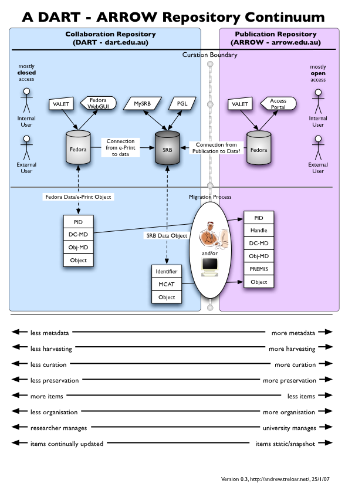

Curation boundary: the line between collaboration and preservation
2007-02-07
At OpenRepositories 2007 in Texas, Andrew Treloar showed me this picture that he developed along with colleagues at Monash, ARROW, DART and associated projects. There's a lot going on here, but I like the idea of a curation boundary. [Fixed spelling on Andrew's name]
On the left of the curation boundary is work in progress, with less metadata and general rigour, but more frequent updates. On the right is where works go to be looked after in a longer time frame in a repository.
(My spell checker doesn't like curation, it's suggesting duration which kind of fits too).
Andrew's picture shows DART systems on top of the Fedora repository back end but the idea applies to other combinations of research tools with repository storage such as APSR's work with the Open Journal System and DSpace integration, and with the work we're doing on ICE for Research and Scholarship (ICE-RS). ICE uses a collaboration repository, which is based on Subversion. Later this year ICE-RS project will show how finished collaborations can be archived once they are ready to be shoved over the curation boundary – I have already mentioned our first try with Fedora.
I had a bit of a rave the about the collaboration space in my Workflow 2.0 piece.
(There was a presentation on APSR's work by Scott Yeadon at OR07, but I hesitate to give you this link which contains an abstract, cos it doesn't look very persistent to me. What happens next year? http://openrepositories.org/program/dspace)
